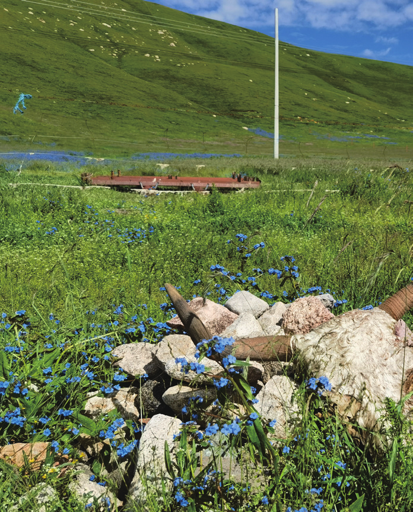
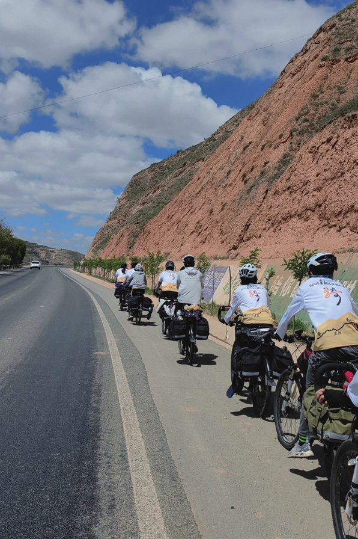
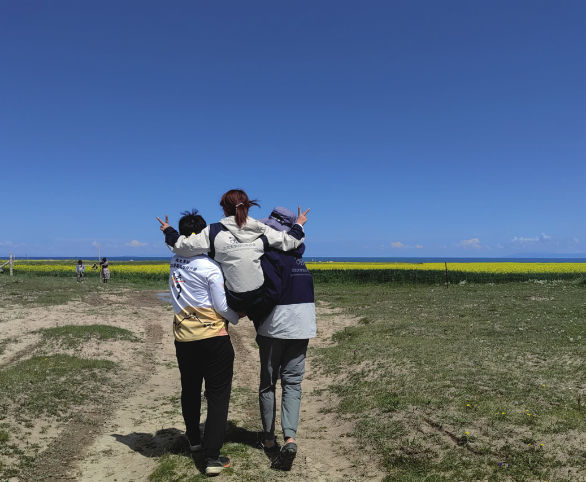
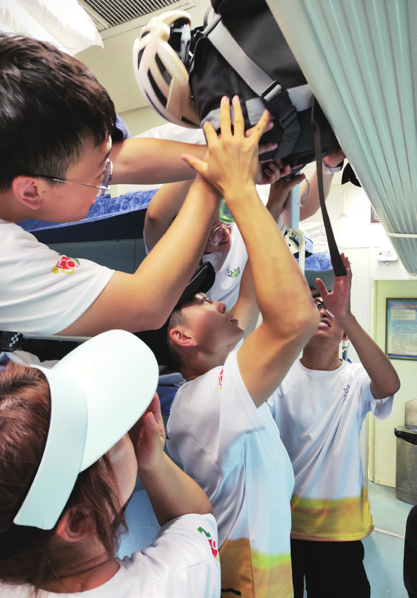
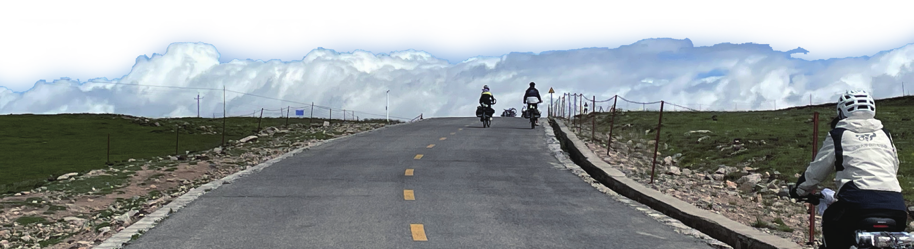

我记得
原刊62
我记得
在黑马河油菜花田太阳将出未出时翻滚如烟雾的紫色云霞
在小河中漂流的油画般浓稠的白云和水彩般清亮的天空
马路中间悠悠散步的牦牛铃铛声声悠扬
小镇上的彩色经幡飘扬一群羊拥簇着奔跑向前
草原上嗖嗖窜动的鼠兔小精灵
大冬树山垭口上含苞待放的雪莲


我记得
路上放的《奢香夫人》、《倔强》、《好好》、《美美》
五月天、邓紫棋、土嗨歌、动画片主题曲、滕王阁序、霉霉……
还有耳边呼啸的风声、鸟鸣
那些欢声笑语与鬼哭狼嚎
我记得
一路逆风飞快蠕动的缓上
隧道中惊险的摔车
西宁城区夜雨中扎的胎
质朴牧民的馒头刺客
高原为我们呼吸带来的压迫
冷雨带来的刺骨寒凉


我记得
为我们送站到西安的二二，为我们打下暑期第一天的早饭前站
下着冷雨的高原上，加油站里大家一人一口的热乎乎的奶茶和泡面
黑马河的店家赠与我们每人一条的哈达
躺在防潮垫上看到的银河与不期而遇的流星
油菜花田里大家灿烂的笑容比阳光还耀眼
加油站追着我们念咒语的可笑又可怜的小孩
和语言不通的老板讨价还价成功的喜悦
小八被载上大冬树山垭口时大家的欢呼
加油站老板与我们分享西瓜的快乐与感动
爬上卓尔山为小八摘的八种花
发展下线互相帮助完成国王与天使愿望的欢乐
在加油站里等待雨停好心的店员专门为我们烧的热水


我记得
蒙蒙细雨天里令人久等的葱爆羊肉和刷得好干净的盘子
三三莅临指导那天的羊羔腿肉鲜嫩多汁，回想起来让人垂涎三尺
快乐源泉大西瓜、糖拌西红柿
大姐爬了一路的坡为午饭前站带的桃子
超级甜的葡萄、好吃的氢离子
不约而同许下想吃香蕉的愿望
杏皮茶、甜胚子奶茶、有牛味的酸奶
天使放在每个人梁包里的桃子
快要断糖时的沙琪玛
前站的梁包里长出来的果冻
念念难忘的麦麦芒果安慕希冰激凌


我记得
坡顶的树好爬
卓尔山上风景很美
清水镇夜晚的星汉灿烂
火烧似的天色令人沉醉忘返
天地间，我们最最可爱
我记得海拔一点点上升，呼吸变得艰难
我记得海拔一点点下降，心情变得不舍
我记得与这样一群人同行过 30 天的路
猫猫万人迷大姐
可爱的上帝二二
古灵精怪的三三
细致豪迈的四姐
运筹帷幄的团儿
勇担大梁的六哥
反射弧长的七哥
乐观坚强的小八
文美歌甜的九九
憨憨猪头的十哥
最最可爱的小妹
靠谱安心的小哥
离谱逆天的小弟
我知道我们的故事还没有结束


我记得的还有好多好多
请给我一个青春的时间去回味这个独一无二的夏天